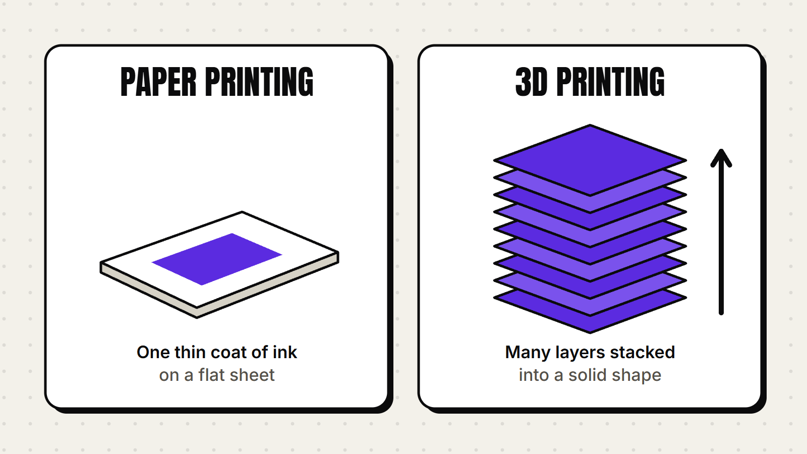
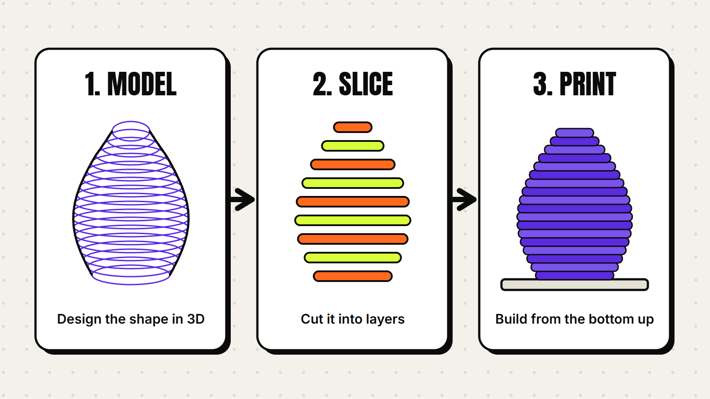

Say "printing" and most people picture a sheet of paper sliding out of a machine on a desk. 3D printing borrows the word, but the result is an object you can pick up. Both turn a digital file into something physical, and both build it a little at a time. Almost everything else is different: the file, the material, the speed, the finishing, and what can go wrong. This guide explains the difference in plain language, so you know what to expect before you order or buy a printed part.
An ordinary printer places ink or toner on a flat surface. The picture has width and height, and the thickness of the ink hardly matters. A 3D printer places material in space, so the result has width, height, and depth. It does this by stacking many thin layers, one above another, until the shape is complete. Engineers call this additive manufacturing, because material is added only where the part needs it.

The two common office technologies are inkjet and laser. An inkjet printer fires tiny droplets of liquid ink from a moving head while rollers pull the paper forward. A laser printer uses light to draw the page as an electric charge on a drum, picks up powdered toner with that charge, transfers it to the paper, and fuses it with heat.
Either way, the paper already exists and gives the print its strength and shape. The printer only decides where colour goes. The file is a document or an image, such as a PDF or a JPG, and the same file looks much the same on most printers. If a page comes out wrong, you lose one sheet and a little ink, and you print it again.
A 3D printer starts with nothing but a flat build surface. It has to create both the shape and the strength of the object. The process has three steps.

A spool of plastic filament is fed into a hot nozzle. The nozzle melts it and draws each layer as a thin line, a bit like piping icing on a cake. The line cools and bonds to the one below. This is the most common method for decor, organisers, holders, brackets, and prototypes. You can see fine layer lines on the sides of the part, and they are a normal feature of the process.
The printer holds liquid resin in a shallow tank. Light hardens one layer at a time, and the part is lifted out of the liquid as it grows. Resin captures much finer detail and gives smoother surfaces, so it suits miniatures and small precise pieces. Finished parts need washing and a second round of light curing, and resin parts are usually more brittle than good filament parts.
| Question | Paper printing | 3D printing |
|---|---|---|
| What comes out | A flat page | A solid object |
| Material | Ink or toner on paper | Plastic filament or liquid resin |
| Typical file | PDF, DOCX, JPG | STL, 3MF, OBJ, STEP |
| Settings that matter | Paper size, colour, quality | Material, layer height, orientation, walls, infill, supports |
| Speed | Seconds for a page | Far longer, and it grows with size and detail |
| After printing | Ready to read | Supports removed, surfaces cleaned, sometimes sanded or cured |
| Strength | Comes from the paper | Comes from the material and how it was printed |
| Cost grows with | Number of pages and colour coverage | Material used, machine time, and handwork |
With paper, two people printing the same file will get nearly the same page. With 3D printing, the same model can come out strong or weak, smooth or rough, depending on choices made in the slicer.
Tip: When you ask for a custom part, say how it will be used. "It holds a 2 kg bag on a wall near a window" tells a printer far more than "make it strong".
Paper printing is the right tool for information: documents, photos, labels, posters, and packaging sleeves. It is fast, cheap per copy, and consistent.
3D printing is the right tool for shape: a holder that fits your exact gadget, a replacement clip for something no longer sold, a prototype to test before spending on tooling, a display stand in a size shops do not stock, or a gift with a name built into it. Changing the design means changing the file, so small batches and one-off pieces are practical.
If you already have a file, learn how to prepare it for printing and then request a quote. If you have only an idea or a sketch, our design service turns it into a printable model. And if you would rather start with something finished, browse the ready-made products.